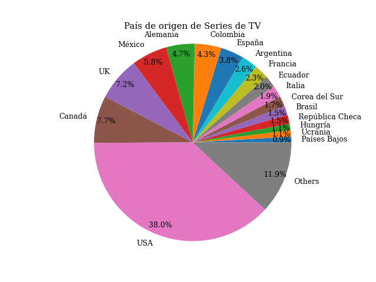
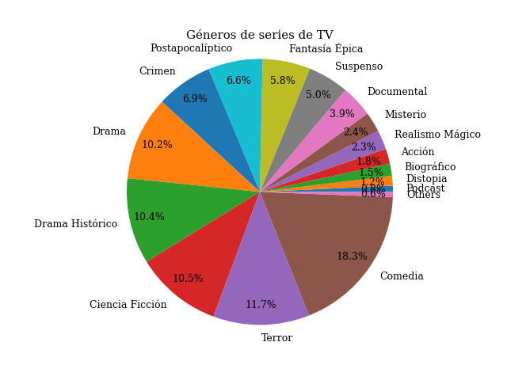
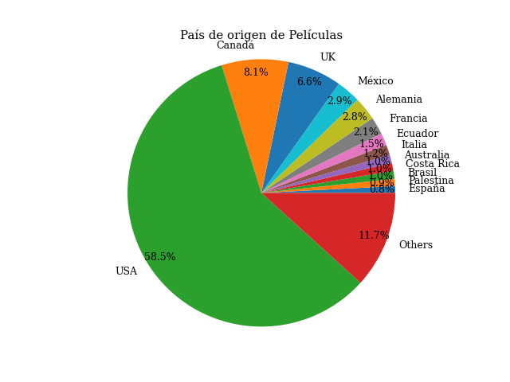
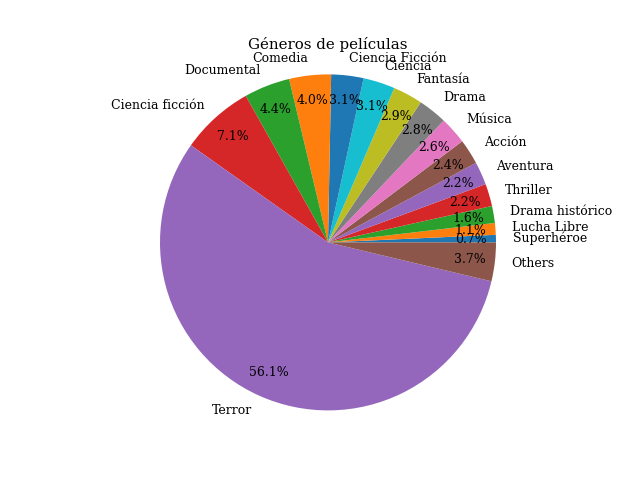

TV Series
Since I like stories, I really enjoy watching TV series. My favorites are the following
- Game of Thrones
- One Hundred Years of Solitude
- Breaking Bad
- The Stand (1994)
- The House of the Dragon
- Black Mirror
- Chernobyl
- Three-Body Problem
- Vikings
- Vikings: Valhalla
- The Fall of the House of Usher
- Better Call Saul
- Dark
- The eternaut
- The tattooist of Auschwitz
- Eva Lasting
- A knight of the seven kingdoms
- Russian Doll
- Yellowjackets
- The Last of Us
- EnchufeTV
- The Stand (2020)
- Squid Game
- Brave New World
- Daryl Dixon
- Money Heist
- Berlin
- The Queen’s Gambit
- Cidade dos homens
- King and Conqueror
- Prison Break
- Jeffrey Epstein: Filthy Rich
- Dahmer – Monster: The Jeffrey Dahmer Story
- 13 Reasons Why
- Kevin can go fuck himself
- Sex Education
- Genius
- Kaos
- Familia de Diez
- Chespirito: Sin querer queriendo
- Malcolm in the Middle
- Drake and Josh
- Cantinflas
- Swerved
- Nothing to Report
- The Edge and Christian Show that Totally Reeks of Awesomeness
- The Big Bang Theory
- Supernatural
- Dead City
- The Walking Dead
- World Beyond
- Fear the Walking Dead
- The Ones Who Live
- Narcos
- You
- American Horror Story
- American Horror Stories
- Hitler y los Nazis: La Maldad a Juicio
- De Zaak Menten
- It (1990)
- Lalola
- Tú Crees?
- Young Sheldon
- La nena (Poné a Francella)
- Familia P-Luche
- The Witcher
- Lucifer
- Imposters
- The Flight Attendant
- Talk is Jericho
- The Big Show Show
- But I'm Chris Jericho
- Sherlock
- Tear Along the Dotted Line
- This world can't tear me down
- My two cents
- Orange Is the New Black
- The Lesson Is Murder
- Death Note
- Bondi Ink Tattoo
- Cantinflas Show
- High Fidelity
- Queen Charlotte: A Bridgerton Story
- Valeria
- Alias Grace
- The Time It Takes
- Digimon
- XHDerbez
- Say nothing.
- The last Kingdom.
- North of the north.
- Georgie & Mandy's First Marriage
- El Chavo del 8
- Cassandra.
- El Chapulin Colorado
- Narcos México.
- Orphan black.
- Perfume (2018).
- The Society.
- Las abogadas.
- Tomorrow and I.
- Gabriela, Cravo e Canela (1961).
- Gabriela (1975).
- Gabriela (2012).
- 1984 (1953).
- 1984 (1954).
- The World of George Orwell: 1984 (1965).
- Chespirito
- Acapulco.
- Curon.
- Masters of Horror
- Bloodaxe
- Shadow hunters.
- Bones.
- Stranger things.
- Only murders in the building.
- Grey's anatomy.
- Fallout.
- Cosider feblas.
- Tiger King.
- The dark side of the ring.
- Proyecto UFO.
- Adolescencia.
- Constelación.
- Spartacus
- Historien om Sverige
- S line.
- The pendragon cycle: Rise of the Merlin.
- The enfield poltergeist.
- The enfield haunting.
- Moonhaven.
- Into the void.
- Mi recinto
- Manzana 12
- Como agua para chocolate
- Falling Skies
- The man in the high castle
- For All Mankind
- The dinosaurs
- Los Nibelungos: la guerra de los reinos
- Shogun.
- Emergencia Radiactiva.
- The silent sea.
- Margot's got money troubles.
- Chulla vida.
- Troya.
- Los Tudor.
- See.
- La casa de los espíritus.
- Dark matter.
- The Lord of the Rings: The Rings of Power.
List of movies I have watched
Here is a list of the movies I have watched
- The Voice of Hind Rajab
- Prince of Darkness
- See No Evil
- See No Evil II
- SAW
- SAW II
- SAW III
- SAW IV
- SAW V
- SAW VI
- SAW 3D
- Jigsaw
- Spiral: From the Book of Saw
- SAW X
- Hostel
- Hostel: Part II
- Hostel: Part III
- All Hallows' Eve
- Terrifier
- Terrifier 2
- Terrifier 3
- Friday the 13th
- Friday the 13th: Part 2
- Friday the 13th: Part III
- Friday the 13th: The Final Chapter
- Friday the 13th: A New Beginning
- Friday the 13th Part VI: Jason Lives
- Friday the 13th Part VII: The New Blood
- Friday the 13th Part VIII: Jason Takes Manhattan
- Jason Goes to Hell: The Final Friday
- Jason X
- Freddy vs. Jason
- Friday the 13th (2009)
- The Omen
- Damien: Omen 2
- Omen 3: The Final Conflict
- Omen 4: The Awakening
- The Omen (2006)
- The First Omen
- Hellraiser
- Hellbound: Hellraiser II
- Hellraiser III: Hell on Earth
- Hellraiser: Bloodline
- Hellraiser: Inferno
- Hellraiser: Hellseeker
- Hellraiser: Deader
- Hellraiser: Hellworld
- Hellraiser: Revelations
- Hellraiser: Judgement
- Hellraiser (2022)
- Chuzalongo
- Dark Match
- The teacher
- No Other Land
- Persepolis
- Voces Inocentes
- No
- Idiocracy
- Rich Flu
- Las últimas horas
- La muerte de Jaime Roldós
- Con mi corazón en Yambo
- Hidden Figures
- Ciudad de Dios
- Cidade dos homens
- El pepe una vida suprema.
- Radioactive
- Oppenheimer
- Interestellar
- Don't look up
- The Imitation Game
- Society of the Snow
- The long walk
- Gabriela
- The Green Mile
- Jurassic Park
- The lost world: Jurassic Park
- Jurassic Park III
- Jurassic World
- Jurassic World: The Fallen Kingdom
- Jurassic World: Dominion
- Jurassic World: Rebirth
- Pirates of the Caribbean: The Curse of the Black Pearl
- Pirates of the Caribbean: Dead Man's Chest
- Pirates of the Caribbean: At World's End
- Pirates of the Caribbean: On Stranger Tides
- Pirates of the Caribbean: Dead Men Tell No Tales
- Final Destination
- Final Destination 2
- Final Destination 3
- The Final Destination
- Final Destination 5
- Manhunter
- The Silence of the Lambs
- Hannibal
- Red Dragon
- Hannibal Rising
- El Camino: A Breaking Bad Movie
- Escape The Undertaker
- Bandersnatch
- The Theory of Everything
- A Beautiful Mind
- Martian
- Einstein and Eddington
- Back to the future
- Back to the future Part 2
- Back to the future Part 3
- Argentina 1985
- Efecto Ladrillo
- Chicago Boys
- Prometeo deportado
- The boy with stripped pajamas
- The Pianist
- One Life
- The Schindler's list
- Josef Mengele: The Auschwitz Angel of Death
- Nuremberg
- Belzebuth
- When Evil Lurks
- Festen
- Martyrs (2008)
- Martyrs (2015)
- Sinister
- Sinister II
- The Conjuring
- Annabelle
- The Conjuring 2
- Anabelle: Creation
- The Nun
- Anabelle Comes Home
- The Conjuring: The Devil Made Me Do It
- The Nun II
- The last house on the left (1972)
- The last house on the left (2009)
- Wrong Turn
- Wrong Turn 2: Dead End
- Wrong Turn 3: Left for Dead
- Wrong Turn 4: Bloody Beginnings
- Wrong Turn 5: Bloodlines
- Wrong Turn 6: Last Resort
- Wrong Turn (2021)
- A Nightmare on Elm Street
- A Nightmare on Elm Street 2: Freddy's Revenge
- A Nightmare on Elm Street 3: Dream Warriors
- A Nightmare on Elm Street 4: The Dream Master
- A Nightmare on Elm Street 5: The Dream Child
- A Nightmare on Elm Street: The Final Nightmare
- Wes Craven's New Nightmare
- A Nightmare on Elm Street (2010)
- The Exorcist
- Exorcist II: The Heretic
- The Exorcist III
- Exorcist: The beginning
- Dominion: Prequel to the Exorcist
- The Exorcist: Believer
- The Texas Chain Saw Massacre (1974)
- The Texas Chainsaw Massacre 2
- Leatherface: Texas Chainsaw Massacre III
- The Return of the Texas Chainsaw Massacre
- The Texas Chainsaw Massacre (2003)
- The Texas Chainsaw Massacre: The Beginning
- Texas Chainsaw 3D
- Leatherface
- Texas Chainsaw Massacre (2022)
- Insidius
- Insidius: Chapter 2
- Insidius: Chapter 3
- Insidius: The Last Key
- Insidius: Fear of the Dark
- Halloween
- Halloween II
- Halloween III: Season of the Witch
- Halloween 4: The return of Michael Myers
- Halloween 5: The revenge of Michael Myers
- Halloween: The curse of Michael Myers
- Halloween H20: 20 Years Later
- Halloween: Resurrection
- Halloween (2007)
- Halloween II (2009)
- Halloween (2018)
- Halloween Kills
- Halloween Ends
- Scary Movie 1
- Scary Movie 2
- Scary Movie 3
- Scary Movie 4
- Scary Movie 5
- Scary Movie 6
- Scream
- Scream 2
- Scream 3
- Scream 4
- Scream (2022)
- Scream VI
- The dirt
- The runaways
- Woodstock 99: Peace, Love, and Rage
- Decline of the western civilization
- Decline of the western civilization Part II: The Metal Years
- Decline of the western civilization Part III
- Wayne's World
- Wayne's World 2
- Misfit
- Enchufe sin visa
- Cantinflas (2014)
- El Chanfle
- El Chanfle 2
- Drake and Josh Go Hollywood
- No manches Frida
- No manches Frida 2
- American Pie
- American Pie 2
- American Wedding
- American Reunion
- Coyote vs. ACME
- Heretic
- It Chapter One
- It Chapter Two
- You're next
- The Curse of La Llorona
- Ghosts of the Ozarks
- Trick or treats (1986)
- Sissy
- The Unborn
- House of 1000 Corpses
- The VVitch: A New-England Folktale
- Rabid (1977)
- Ghostland
- Frankenstein (1931)
- Mary Shelley's Frankenstein (1994)
- Frankenhooker
- Santa's Slay
- Demons
- Demons 2
- The Church
- Demons (2017)
- Hatchet
- Hatchet II
- Hatchet III
- The thing
- Audition
- Faces of Death
- Faces of Death II
- Faces of Death III
- Faces of Death IV
- Faces of Death V
- Tales from the crypt (1978)
- Tales from the crypt: Demon Knight
- Tales from the Crypt Presents: Bordello of Blood
- Mandy The Haunted Doll
- Poltergeist
- Poltergeist II: The Other Side
- Poltergeist III
- Poltergeist (2015)
- The Prestige
- The Hunger Games
- The Hunger Games: Catching Fire
- The Hunger Games: Mockingjay - Part 1
- The Hunger Games: Mockingjay - Part 2
- The Hunger Games: The Ballad of Songbirds & Snakes
- México 86 (2026)
- Obsession
- The Substance
- Arrival
- Edge of tomorrow
- From Hell
- Perfume: The Story of a Murderer
- Troy
- Like Water For Chocolate
- The Mortal Instruments: City of Bones
- Jesús de Nazareth
- The Da Vinci Code
- Rosario Tijeras
- 2012
- Bad Genius
- The Wolf of Wall Street
- The Godfather
- Bird Box
- Bird Box: Barcelona
- Left Behind
- Signals
- Los dos hemisferios de Lucca
- The day after tomorrow
- Home
- The Real Evidence Laptop
- Downsizing
- Everything Everywhere All at Once
- The butterfly effect
- Lolita
- The tale
- L'événement
- The help
- Freedom writers
- Pompeii: The Last Day
- Pitch Black
- Perras
- Hamlet (Teatro Británico)
- Hamlet
- Harry Potter and the Philosopher's Stone
- Harry Potter and the Chamber of Secrets
- Harry Potter and the Prisoner of Azkaban
- Harry Potter and the Goblet of Fire
- Harry Potter and the Order of the Phoenix
- Harry Potter and the Half-Blood Prince
- Harry Potter and the Deathly Hallows - Part 1
- Harry Potter and the Deathly Hallows - Part 2
- Lord of the rings: The fellowship of the ring
- Lord of the rings: The two towers
- Lord of the rings: The return of the king
- The Hobbit: An unexpected Journey
- The Hobbit: The Desolation of Smaug
- The Hobbit: The Battle of the Five Armies
- Al otro lado de la niebla
- Papá al Rescate
- How to train your dragon
- World War Z
- Resident Evil
- Resident Evil: Apocalypse
- Resident Evil: Extinction
- Resident Evil: Afterlife
- Resident Evil: Retribution
- Resident Evil: The Final Chapter
- Resident Evil: Welcome to Raccoon City
- The happening
- A King in New York
- Now you see me 1
- Inside (2007)
- Inside (2016)
- Night of the Demons
- Night of the Demons 2
- Night of the Demons 3
- Night of the Demons (2009)
- Jennifer's Body
- The Addams Family
- Addams Family Value
- Happy death day
- Happy death day 2U
- Donnie Darko
- Basket case
- Basket case 2
- Basket case 3: The progeny
- Child's play (1988).
- Child's play 2.
- Black Phone
- Black Phone 2
- Joy Ride
- No hard feelings
- Good luck chuck
- Keeping up with the Joneses
- Bad neighbours
- What's your number?
- Let's be cops
- Two night stand
- Just married
- Dos tipos de cuidado
- El mesero
- How to be a Latin Lover
- Porky's
- The Last American Virgin
- Screwballs
- Screwballs 2
- A million ways to die in the west
- Frida (2002)
- Frida (2020)
- Frida (2024)
- Coma
- Alice, Darling
- Streets of Fire
- Groundhog Day
- Fractured
- Shutter Island
- Deadpool I
- Deadpool 2
- Deadpool & Wolverine
- Joker
- Batman begins
- The dark knight
- The dark knight rises
- Metallica: Through the Never
- Classic Albums: Motorhead - Ace Of Spades
- Classic Albums: Iron Maiden - The Number of the Beast
- The Story of wish You Were Here
- Centuries of Torment: The First 20 Years
- A Year and A Half in the Life of Metallica
- Imaginaerum
- Undertaker: The Phenom
- CM Punk: Best in the World
- ROH: The Summer of Punk
- Jeff Hardy: My Life, My Rules
- Fighting with my Family
- The wrestler
- Chris Jericho: Break the Walls Down
- WWF: Funniest Moments
- Best of RAW After the Show
- The History of WWE
- The Twisted, Disturbed Life of Kane
- Before they were WWF Superstars
- Lita: It Just Feels Right
- Wrestling Greatest Factions
- Behind the Mat
- ROH: The Second City Saints
- Knockouts: The Ladies of TNA
- Takedown: The DNA of GSP
- The Tinder Swindler
- Barbie
- Mandy
- Creep
- Girl on the third floor
- The blair witch project
- Book of Shadows: Blair Witch 2
- Blair Witch
- Jakob's Wife
- Wineville
- Devon
- The house of the devil
- Paranormal Activity
- Paranormal Activity 2
- Paranormal Activity 3
- Trick or treat
- Trick r treat (2007)
- Trick or treat (2019)
- Before I fall
- The favourite
- Smashed
- I, Robot
- The Matrix
- The Matrix Reloaded
- The Matrix Revolutions
- The Matrix Resurrections
- Pacific Rim 1
- The Scorpion King
- Constantine
- The mummy
- The mummy returns
- Prince of Persia: The Sands of Time
- Alien vs. Predator
- The judge
- The family man
- 20th century women
- I am Legend
- Men in black
- Eragon
- Coco
- Pinocchio (2022)
- What the fuck is going on
- The condemned
- Knockout
- Bending the rules
- Inside Out 2
- 12 Rounds
- 12 Rounds 2: Reloaded
- The Marine
- The Marine 2
- The Marine 3: Homefront
- How the Grinch stole Christmas
- Fast and Furious 6
- The man with the iron fists
- Recoil
- House of the rising sun
- G. I. Joe: Retaliation
- The Nightmare before Christmas
- Battleship
- Hellboy 2: The Golden Army
- Delivery man
- La dolce villa
- Uptown girls
- Love and Other Drugs
- 7 años de matrimonio
- Spirit: Stallion of the Cimarron
- Guardians of the Galaxy: Vol. 1
- Hercules
- The house of the devil
- Space woman.
- Triangle.
- Orange Clockwork.
- E gia ieri.
- Full metal Jacket.
- Final Destination: Bloodlines.
- Gerald's game.
- Angels And Demons.
- Inferno.
- Paul.
- Focus.
- 1984 (1956).
- 1984 (1984).
- 1984 (2023).
- Me and big guy.
- Brave New World (1980).
- Brave New World (1998).
- Full speed.
- Heart and soul (1948).
- The Perfumier (2022).
- Gabriela (1983).
- House of Usher (1960).
- The Pit and the Pendulum (1961).
- Tales of Terror (1962).
- The Masque of the Red Death (1964).
- The Raven (1963).
- The Raven (2012).
- Tales of Poe (2014).
- Redrum.
- The Tell-tale heart.
- Demolition Man.
- Baby's day out.
- Syd and Nancy.
- The Doors.
- The runaways.
- Last days.
- The minor (1974).
- Johnny take his gun.
- 7 años
- Pacific Rim: Uprising.
- Now you see me 2.
- Fatal Attraction.
- Basic Instinct.
- Unfaithful.
- Vision Quest.
- The Jersey Sound.
- Lost monster file.
- Cutthroat Island.
- Private School.
- Pacific Heights.
- En un confin del mundo
- La noche de los lápices
- Machuca
- Diarios de motocicleta
- La inserrucción de la Burguesía
- El golpe de Estado
- El poder popular
- El derecho de vivir en paz
- Memorias del subdesarrollo
- Campesinos
- A quiet place: day one
- El misterio de Salem's Lot
- Deep Impact
- Screamboat.
- Sea Lions of the Galápagos.
- Infierno o Paraiso.
- No sin mi hija.
- Misery.
- Promising young.
- La vida de Chuck.
- The running man.
- La larga marcha.
- Every secret thing.
- The mist.
- La noche de 12 años.
- Tupamaros.
- Six billion dollar man.
- Influjo Psíquico.
- Tucker & Dale vs. Evil.
- Rebeca.
- Manifiesto.
- Vivarium.
- Scream 7.
- La larga marcha.
- Elysium.
- Metalhead.
- Tenacious D.
- The outsiders.
- Dead to rights.
- Rock n Roll Nightmare.
- Black Roses.
- Shocker.
- Strangeland.
- Phantom of the Paradise.
- Shock em Dead.
- Maximum Overdrive.
- Dead end (2003).
- Monster dog.
- Best worst movie.
- Deep waters.
- Hack-O-Lantern.
- Lord of chaos.
- Zombieland.
- Rocket man.
- Bad News Bears.
- Little Children.
- Watchmen.
- Sicko.
- Revenge of the Nerds.
- Revenge of the Nerds II: Nerds in paradise.
- Revenge of the Nerds III: The next generation.
- Revenge of the Nerds IV: Nerds in love.
- Mystery of the wax museum.
- Christine.
- End of days.
- Midnighters.
- Antisocial.
- Steel trap.
- Puka urpi.
- No other choice.
- Queen of chess.
- A tear in the sky.
- Superhuman: The invisible made visible.
- Trumbo
- Roma
- Carta de amor a México
- Iron Sky
- Black Fish
- Nacho Libre
- La Novia
- Send help
- Project Almanac
- Blanco escurridizo
- Historia oficial.
- Northern Lights.
- La gran Palestina.
- Before I go to sleep.
- Stand by me.
- Conclave.
- Metro 2033
- Nimrods.
- Ratas ratones y rateros.
- Deep throat.
- Gaza: Doctors under attack.
- La noche de los 12 años.
- Dissapeared in Ecuador's drug war.
- Las cadenas de Abacá.
- Risa y la cabina del viento.
- The diplomat.
- Maradona by Kusturica.
- Palestine 36.
- Contact.
- Cerco mediático.
- Libertarias.
- Child's play 3.
- Bride of Chucky.
- Seed of Chucky.
- Curse of Chucky.
- Cult of Chucky.
- Child's play (2019).
- Brilliant.
- No hables con extraños.
- Miss violence.
- Gandu.
- La Odisea.
- Los ilusionistas 3.
- El dia de la revelación.
- Ready, player 1.
- Guerra de los mundos.
- México Mágico Loco.
- Matar al mensajero.
- México 86 (2024).
- Cuando ellos se fueron.
- Naza.
- Yanuni.
- In the Lost Lands.
- Total recall.
- El visitante.
- Gravity.
- April Fool's Day.
- New Years Evil.
- The Evil Dead.
- Evil Dead II.
- Army of Darkness.
- Evil Dead.
- Evil Dead Rise.
- House (1985).
- House II: The Second Story.
- House III: The Horror Show.
- House IV: The Repossession.
- House (2024).
- Silent Night Deadly Night Part 1.
- Silent Night Deadly Night Part 2.
- Silent Night, Deadly Night 3: Better Watch Out!
- Silent Night, Deadly Night 4: Initiation.
- Silent Night, Deadly Night 5: The Toy Maker.
- Silent Night (2012).
- I Know What You Did Last Summer
- I Still Know What You Did Last Summer
- I'll Always Know What You Did Last Summer
- Dawn of the Dead.
- Dawn of the Dead (2004).
- The Wicker Man.
- Psycho.
- Psycho II.
- Psycho III.
- Bates Motel.
- Psycho IV: The Beginning.
- Psycho (1998).
- American Psycho.
- American Psycho II.
- Prom Night.
- Hello Mary Lou: Prom Night II.
- Prom Night III: The Last Kiss.
- Prom Night IV: Deliver Us from Evil.
- Prom Night (2008).
- Sleepaway Camp.
- Sleepaway Camp II: Unhappy campers.
- Sleepaway Camp III: Teenage Wastelands.
- Return to Sleepaway Camp.
- Sleepaway Camp IV: The Survivor.
- Brain Dead (1990).
- Braindead (1992).
- Re-Animator.
- Bride of Re-Animator.
- Beyond Re-Animator.
- The Toxic Avenger.
- Night of the Creeps.
- Return of the Living Dead.
- Army of Darkness.
- Pumpkinhead.
- Dark Night of the Scarecrow.
- Pumpkinhead.
- Psycho Santa.
- Night of the Creeps.
- The Monster Squad.
- The outwaters.
- The watchers.
- Effects.
- The Lost Boys.
- Scrooge (1951).
- Scrooge (1970).
- Uncle Sam
- Frogs
- Leprechaun
- Leprechaun 2
- Leprechaun 3
- Leprechaun 4: In Space
- Leprechaun in the Hood
- Leprechaun: Back 2 tha Hood
- Leprechaun: Origins
- Leprechaun Returns
- Jaws.
- Jaws 2.
- Jaws 3-D.
- ThanksKilling.
- My Bloody Valentine.
- My Bloody Valentine 3-D.
- Valentine Bluffs: A My Bloody Valentine Fan Film.
- Slaughter High.
- Midsommar (2019).
- Midsommer (2003).
- Critters.
- Critters 2.
- Critters 3.
- Critters 4.
- Creepshow.
- Creepshow 2.
- Creepshow 3.
- Dawn of the Dead.
- Jaws: The Revenge.
- New Year's Evil
- Christmas Bloody Christmas
- A Christmas Carol (2009).
- Black Christmas (1974).
- Black Christmas (2006).
- Black Christmas (2019).
- Alien.
- Aliens.
- Alien (1992).
- Alien Resurrection.
- Alien vs. Predator: Requiem.
- Prometheus.
- Alien: Covenant.
- The Man Who Knew Infinity.
- Fight Club.
- Paranormal Activity 4.
- Paranormal Activity: The Marked Ones.
- Paranormal Activity: The Ghost Dimension.
- Paranormal Activity: Next of Kin.
- 12 Rounds 3: Lockdown.
- The Marine 4: Moving Target.
- The Marine 5: Battleground.
- The Marine 6: Close Quarters.
- 12 Hellboy.
- 12 Hellboy (2019).
- Eyes wide shut.
- Yo el pueblo, un manual populista.
- Devour.
- The Conjuring: Last Rites.
- Beast.
- La posesión de la momia.
- Thread: An Insidious Tale.
- Faces of death (2026).
- Ice cream man (1995)
- Ice cream man (2026)
- Evil Unbound.
- Frankenstein (Guillermo del Toro).
- Terror train.
- New Years Evil.
- Bloody new year.
- The children.
- You're host.
- Kiss meets the phantom of the park.
- Jaws.
- Clown in a cornfield.
- Pulp fiction.
- This is the spinal tap.
- Rocktober blood.
- Better man.
- Terror on tour.
- The death tour.
- Dangerous Animals
- Citizen Kane.
- Chemical Wedding.
- A space Odyssey
- Di'Anno: Iron Maiden's Lost Singer
- Lemmy (2010)
- I'm to old for this shit
- Vietslam
- Nothin' but a good time: The Uncensored Story of '80s Hair Metal
- If These Walls Could Rock: A Documentary Unveils the Legendary History of the Sunset Marquis Hotel
- Road house (1989)
- Road house (2024)
- Backbeat
- Malignant
- Prophecy



